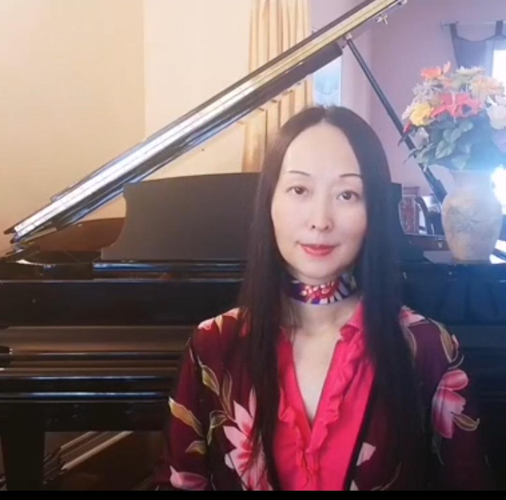

遇见您的钢琴引路人
我是 Lucy，加拿大皇家音乐学院RCM钢琴和乐理老师。从音乐学院的本科生到四岁的琴童，从重返钢琴的上班族到退休圆梦的阿姨，二十多年的教学生涯让我有幸陪伴各式各样的学习者。跨越中西方音乐教育的经历，也让我在黑白琴键间积累了独特的教学经验和心得。
尤其理解成人学琴的挑战，为此我专门设计了线上系统钢琴课程。若你心底始终住着个想弹琴的自己，若你想要专业指导，又需要灵活安排——不妨从这里开始你的音乐旅程，或许这种"随时可学、有问必答"的方式，正是你需要的。
专为成人打造的钢琴自由之路
我深知成人学琴的独特挑战：指尖的僵硬、识谱的卡顿、练琴时间的碎片化……这些细碎的阻碍，恰恰成了我打磨课程的初心
线上专属课程体系
将扎实基本功与灵动音乐性编织成网，让每一分钟练习都有方向，碎片时间也能高效利用。
1对1精准指导
从基础乐理、手指机能训练，从演奏技巧到视频作业细致批改，及时反馈优化。我会陪你稳稳走过每一步，全程陪伴成长。
三大核心突破
重塑手指机能、加速视奏能力、培养音乐性，从第一节课起种下乐句呼吸的意识。
您将收获的不只是技巧
高效进步
即使每天只有二三十分钟，也能在系统化节奏里看见持续进步，告别无效练习。
理解音乐
摆脱「照谱硬弹」的困境，真正读懂音乐结构与情感表达，让旋律走进心里。
热爱绽放
在几个月内流畅演奏自己喜爱的曲目，感受音乐带来的成就感与治愈力。让指尖流淌的不仅是音符，更是藏了许久的热爱。
教学是一场与热爱同行的修行
钢琴于我，早已不是冰冷的乐器，而是流淌在生命里的温暖底色。每当指尖轻触琴键，旋律便如月光般漫过心湖，在喧嚣中沉淀出澄澈的平静，也在迷茫时唤醒心底的力量。
而比这更动人的，是见证每一位学员与音乐的相遇——从指尖的生涩试探到旋律的自然流淌，从眼底的迟疑困惑到眼中跃动的光芒与喜悦。你们每一步成长的印记，都让我愈发坚信教学的意义。
学琴从不必用时间的长度衡量热爱的深度。哪怕每天只有片刻的专注，只要循着温柔而系统的指引扎根练习，钢琴的基础便会如草木般悄然生长，那些藏在音符里的美好与希望，会让平凡的日子也泛起诗意的涟漪。